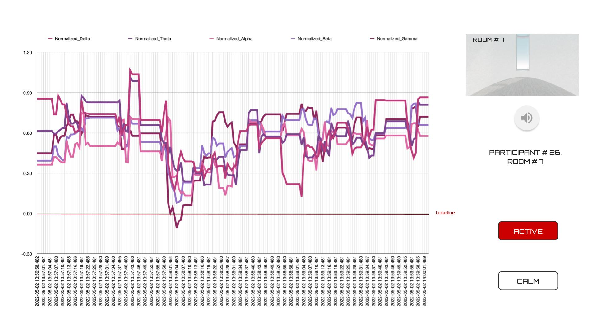
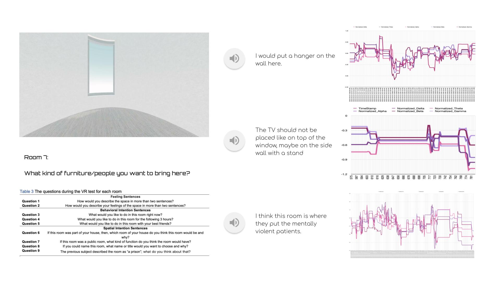
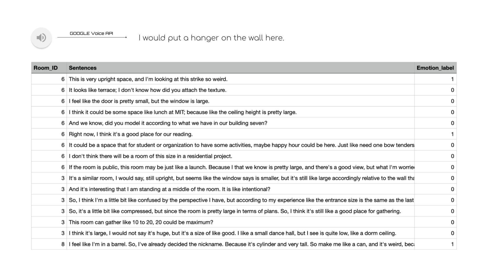

|
Mindful Space in Sentences -A Dataset of Virtual Emotions for Natural Language Classification- Han Tu & Chunfeng Yang
Final project for the MIT class
4.550/4.570
Computation Design Lab |
|
|
Experiment Process The video shows an overview of the four experiments and the two questionnaires. This video was created in order to prepare test subjects for the experiment. Click here to enlarge the video. Movie info: mp4, 4:09 minutes |
|
Project Overview
This research measured the emotions expressed in virtual
reality (VR) spatial experiences. The study analyzed the
sentence descriptions and classifies emotions for further
application in architectural design. More specifically, the
research used EEGs to analyze the relationships among virtual
spaces, virtual experiences in linguistic descriptions, and
the labels for spatial emotions. We varied the parameters in
the visual-spatial environments and mapped from a spatial
description dataset of sentences to spatial emotion labels.
|
||

|
Fig 1. The 10 VR rooms First, the 26 subjects described 10 designed virtual spaces experienced with a VR headset (Quest 2 device) in about 1,402 sentences that correspond to the different space parameters of shape, height, width, and length. |
|  |
Fig 2. EEG Data Analysis EEG data analysis of Participant 26 in VR Room 7, the emotion is labeled as active since the EEG is above the baseline of the participants |
|  |
Fig 3. The room scene, sentences example, and EEG data of Room 7 Simultaneously, the EEG (Muse 2 device) measured the emotions of the subjects using four electrodes and the five brain waves of alpha, beta, gamma, theta, and delta. Second, a visual-spatial dataset of about 1,402 sentences with 2 labels – calm and active – analyzed from EEGs was built by the researchers to describe these virtual reality spaces. |
|  |
Fig 4. Sample of our dataset Test subjects were asked to fill in two questionnaires: personal information(prior the experiment) and subjective feedback(after the experiments). |
|
Limitatins Our dataset has two main limitations. First, the default objects in the virtual room such as windows and doors may affect the participants’ emotions about the spaces. Second, our EEG device can detect very limited brainwaves with active or calm states.
|
|
Conclusion This research attempts to offer a useful NLP emotion classification dataset for architectural design improvement using everyday sentences. The dataset helps architects understand the virtual spatial emotions in everyday descriptions. Therefore, the trained BERT model from our dataset can be utilized to analyze everyday descriptions to obtain the pure spatial emotions as a resource to guide design.
|
2013 All rights reserved. Last modified: Jan. 30, 2014 by TN